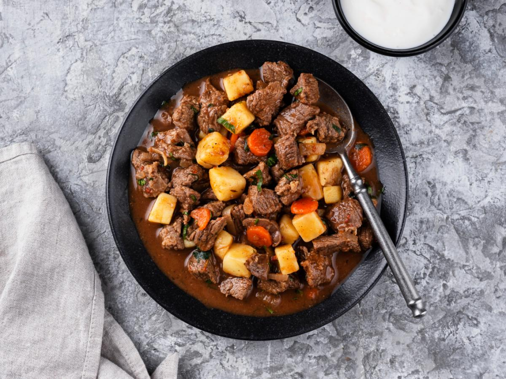

Hungarian Goulash

Description
A picture of Hungarian Goulash, which is one of my favourite meals.
This meal is a sort of stew/soup from Hungary, that has a thinner broth than most stews.
Its flavour is like a beef stew, with hints of paprika and a lot of savouriness from its bell peppers and garlic.
Ingredients
Beef, spices and sauce
- Beef
- Paprika
- Caraway seeds
- Beef stock/broth
- Butter and oil
- Bay leaf
Vegetables
- Onion
- Garlic
- Bell peppers
- Tomatoes
- Carrot
- Potato
- Parsely (optional)
Steps
- Cut the beef into nice sized chunks, then sprinkle with salt and pepper.
- Cook the onion first for 6 minutes until the edges are light golden
- Cook beef - Next, add the beef all in one go and stir until the surface changes from red to brown. You won't be borwning on the beef because there's too much in the pot and that's just how it's supposed to be. All the flavours meld and come together in the next steps.
- Add garlic, bell peppers and tomato. Stir for 3 minutes to coat the vegetables in all the flavour in the pot. The tomato will mostly breakdown - it will break down completing during the slow cooking phase and thicken the sauce.
- Spices - Add paprika, caraway and bay leaf. Stir for 30 seconds to coat everything in the tasty flavours.
- Simmer - Add beef stock, stir, bring to simmer.
- Slow cook - Cover with a lid and transfer to the oven for 1 1/2 hours. At this stage, the beef should be pretty tender but not quite "fall-apart", there's still another 30 minutes to go. Stir in the carrot and potatoes, then cook for another 30 minutes. By this time, the potatoes should be soft and the beef should be "fall-apart".
- Serve - Sprinkle with parsely if you're feeling fancy, then ladle into bowls.
Back